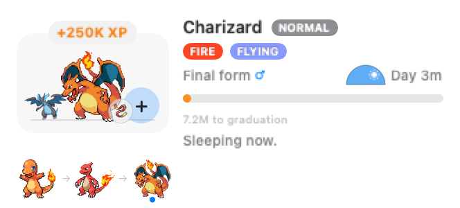
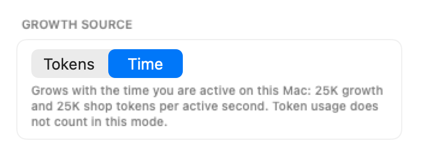
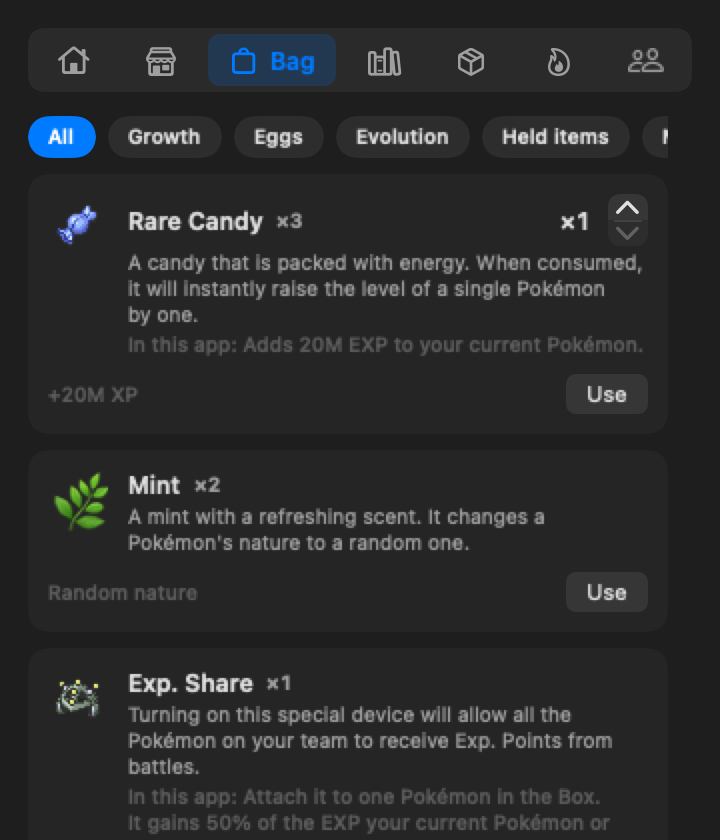
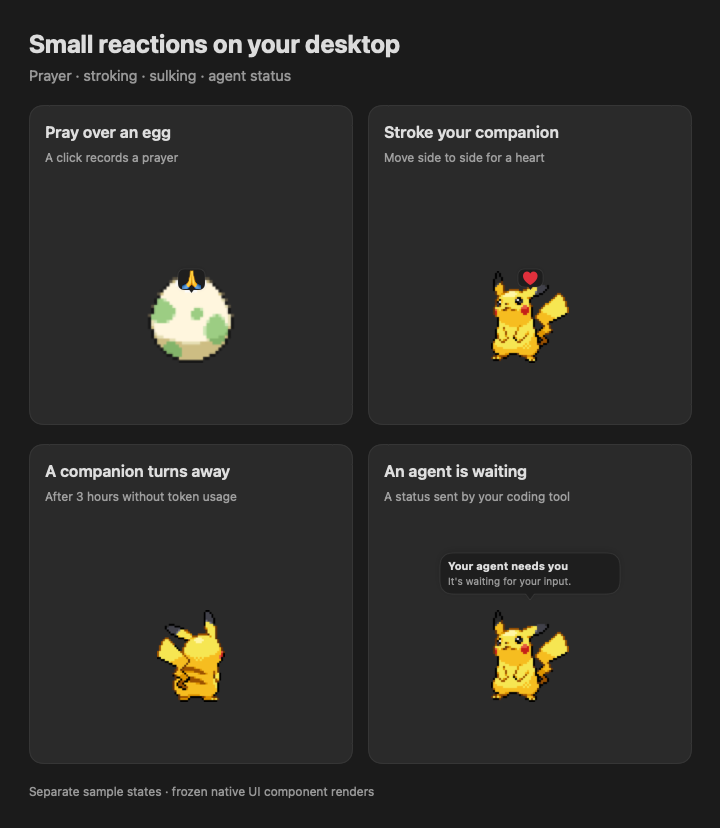

Grow with your AI coding
Every token your coding agents use counts, cache reads included. The same tokens fill your Shop wallet.
Suits heavy agent users.
Tokens or active time hatch an egg and move your partner along its real evolution line. Pick whichever source suits you.
Choose the growth source in Settings and switch any time. Progress you have already banked stays the same in both modes.
Every token your coding agents use counts, cache reads included. The same tokens fill your Shop wallet.
Suits heavy agent users.
Suits light users, or anyone without an AI coding tool.
No token usage for 3 days? The app suggests time mode in Settings.
In either mode, clicking the big sprite on Home or the floating pet adds 50k growth tokens. About 300 clicks take a Normal line from egg to graduation.

Tokens or Time is the only choice. Costs are fixed and the same for everyone. A species you have graduated before grows twice as fast after it hatches.
Picking a source only edits a draft. Press Save to apply it. Switching keeps your current stage progress.

Fill a 5-hour or weekly limit to earn Rare Candy. Use several at once and preview the growth first.

Put your partner on the desktop at 48 to 384 px. Hover for today’s usage, drag it anywhere, and use right-click → Open for the app.
Pet it with the pointer, click an egg to pray, and watch for sulking or event bubbles. Praying is just for fun.
Optional URL events make the pet react while an agent works, waits or finishes. You add the hooks yourself; the app never edits agent settings.
Read the agent setup guidePin an owned species and form to the menu bar and the desktop pet. Your current partner keeps growing on Home.

Growth costs and Shop prices are one fiftieth of the original app’s. A Normal line graduates at 15M tokens and a Legendary at 120M. Saves from older versions keep each stage’s progress when they update.
Day and night switch every 10 minutes on the clock, and Home shows a sun-and-moon dial. Unusual evolutions become conditions the app can check, and a notice tells you what is blocking one.
If a Pokémon is ready to evolve but a condition is unmet, you get one notice per blocking reason. The Pokédex shows the original condition next to the app’s.
The field guide lists the tokens per evolution and estimates the days for your pace and rarity.
Open the field guide